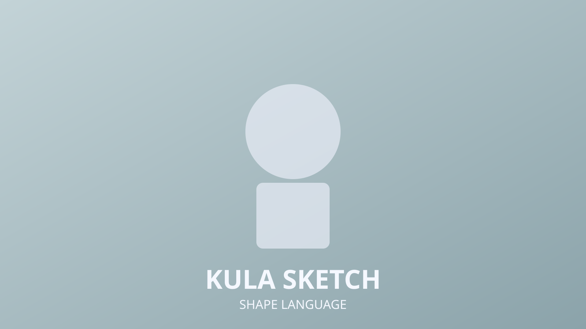
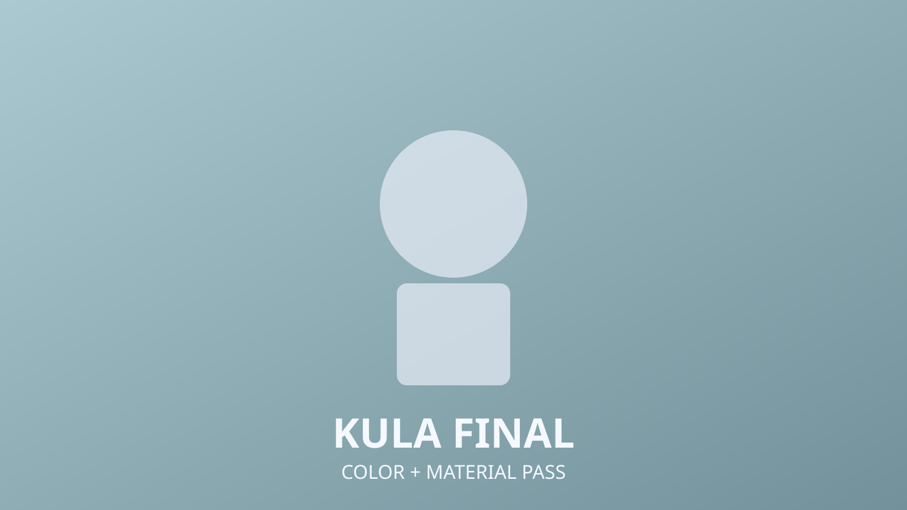

Kula
2D Concept
Character Design
Costume Iteration
Kula focuses on a bold silhouette and material contrast between metal, cloth, and leather accents. The concept balances heroic readability with practical production details.

Shape Language
Early iterations tested shoulder width, cape mass, and accessory scale to keep the character strong from mid and long distance framing.
Color and Material Pass
Material studies separated primary and secondary surfaces, then merged into a final concept sheet tuned for texture and shading handoff.

